Starring:
| Lillo Brancato Jr. | as | Matt Bevilaqua |
|---|---|---|
| Chris Tardio | as | Sean Gismonte |
| Federico Castelluccio | as | Furio Giunta |
Play 2nd II None's "Up 'N Da Club" ft. AMG, DJ Quik to experience the scene in its entirety.
Matt: "Yo, Up in the Club sounds funky."
Sean: "We've gotta steal LEGALLY BUY something to increase the bass."
(Furio furios-ly knocks the door.)
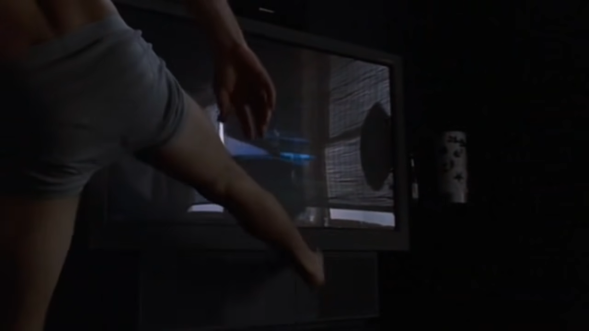(Sean and Matt spring into action, lowering the volume by kicking the TV and putting away their gun mess.)
(Matt checks the peephole to see Furio.)
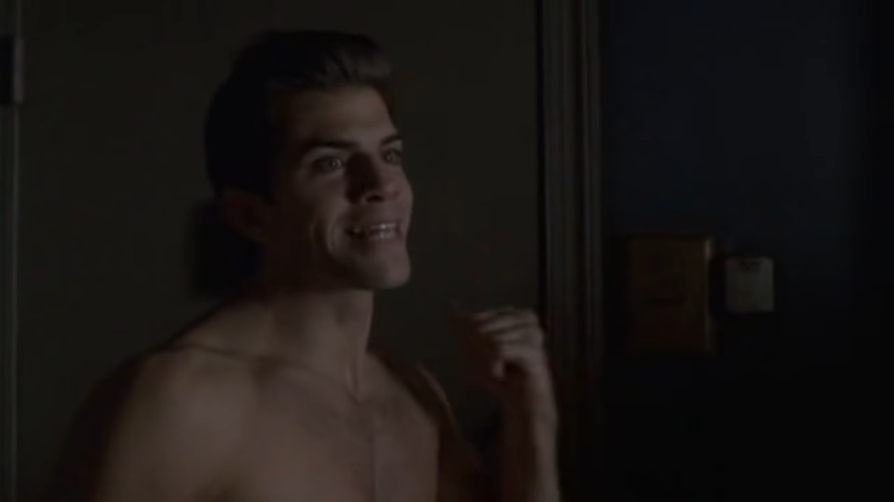Sean: "Ah jeez. Its our good friend, Furio!"
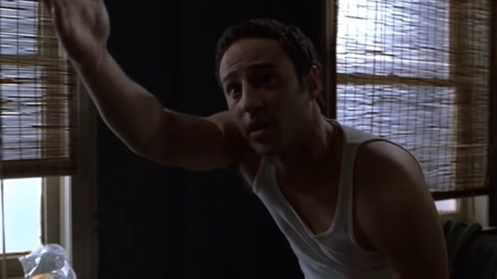Matt: "Let him in, see what he wants!"
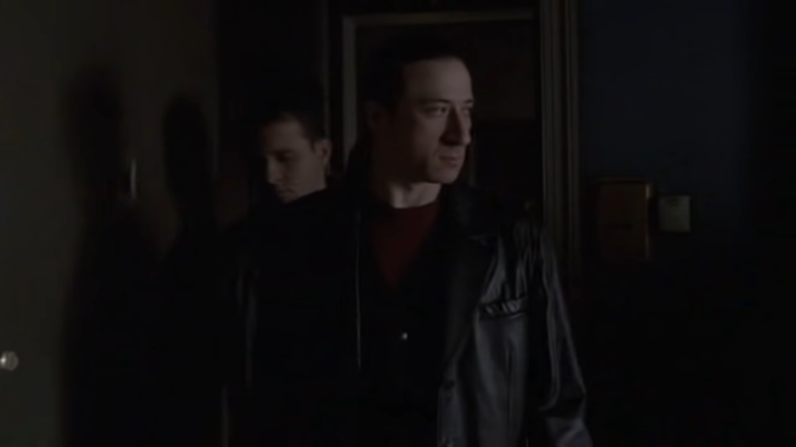(Furio is let in, to which he inspects the place for how dirty neat and tidy it is.
Furio: "We here for the money. The boss money."
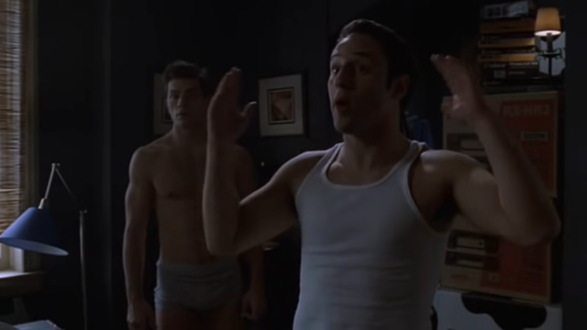Matt: "Oh, the money! Let me get it for ya! Sean, get Tony's money."
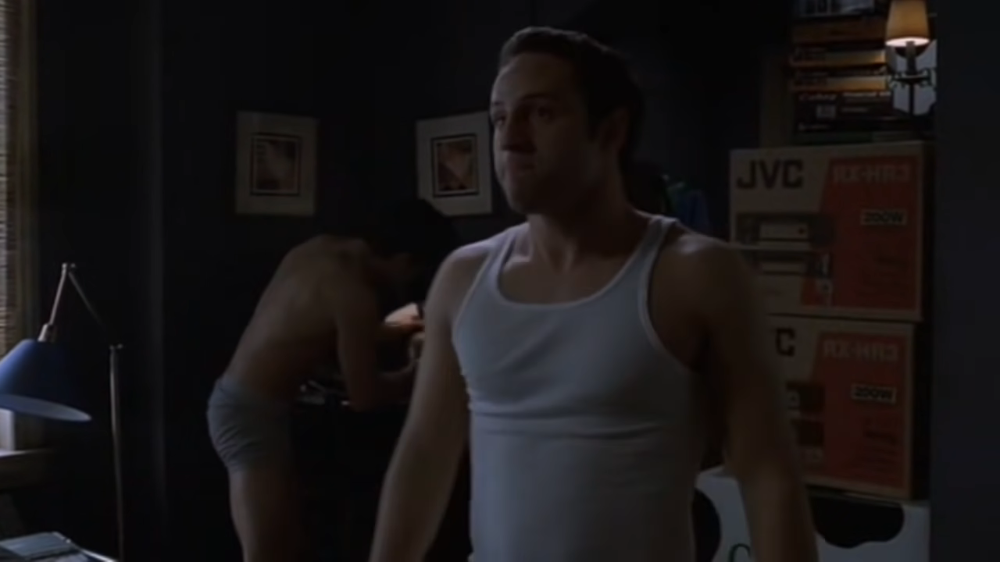(Matt quickly grabs cash out of a lamp.)
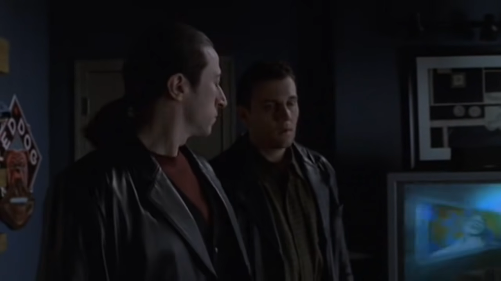(Furio looks to the lovely music video playing on the TV.)
Furio: "E' un bel video musicale. Stunning visuals. Beautiful."
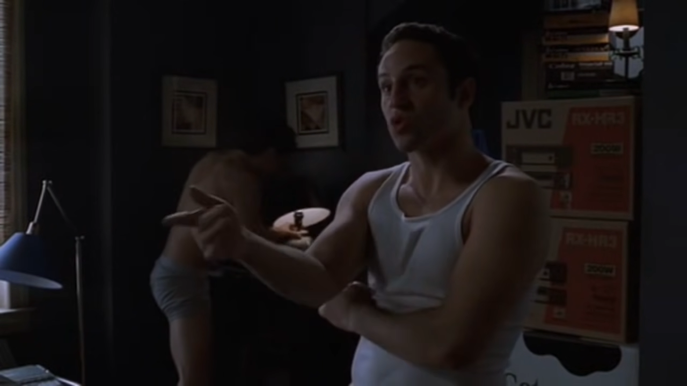Matt: "Hey do you guys want some beer WATER or something?"

Furio: "Just the money."
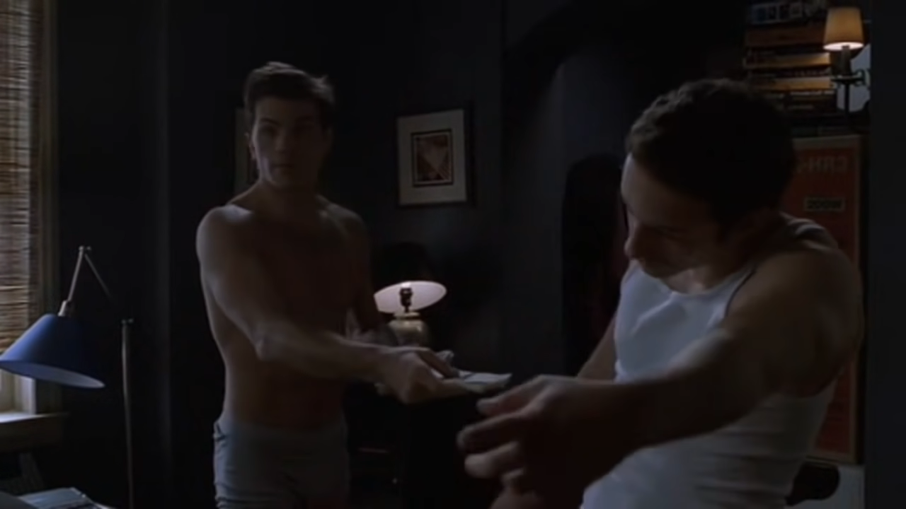(Sean gives the money to Furio.)
Matt: "There it is. Everything Tony wants."
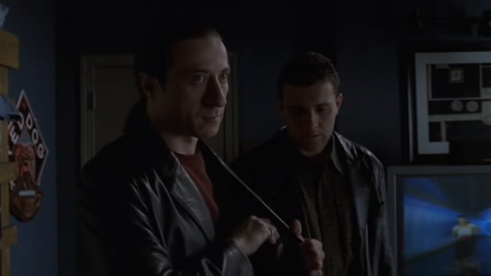Furio: "Give me $1,000."
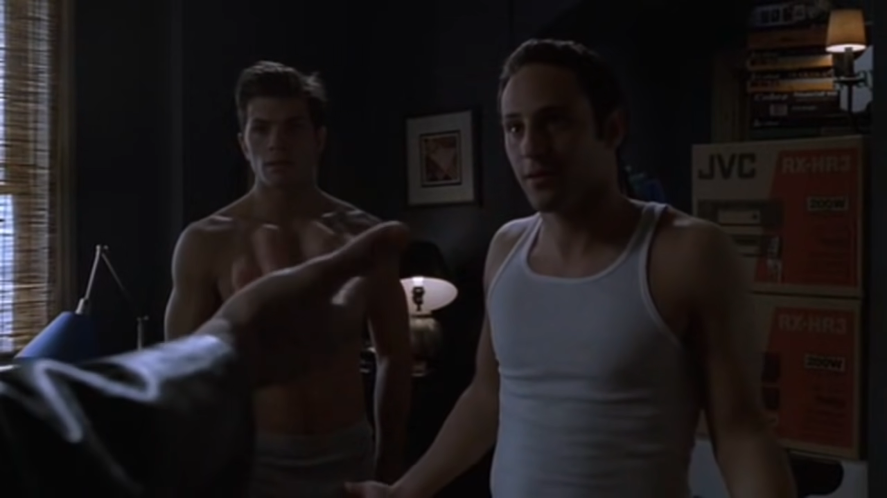(Furio sticks his hand out, expecting the extra payment on top of the rest.)
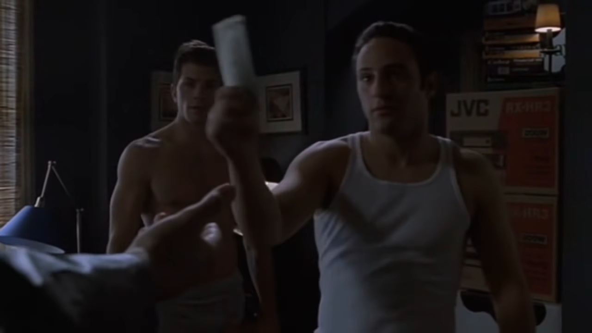(Matt and Sean ultimately give Furio the money.)
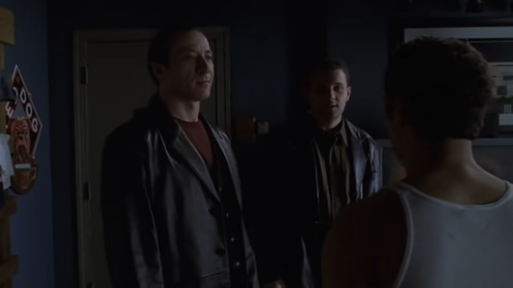Furio: "Have a nice day."
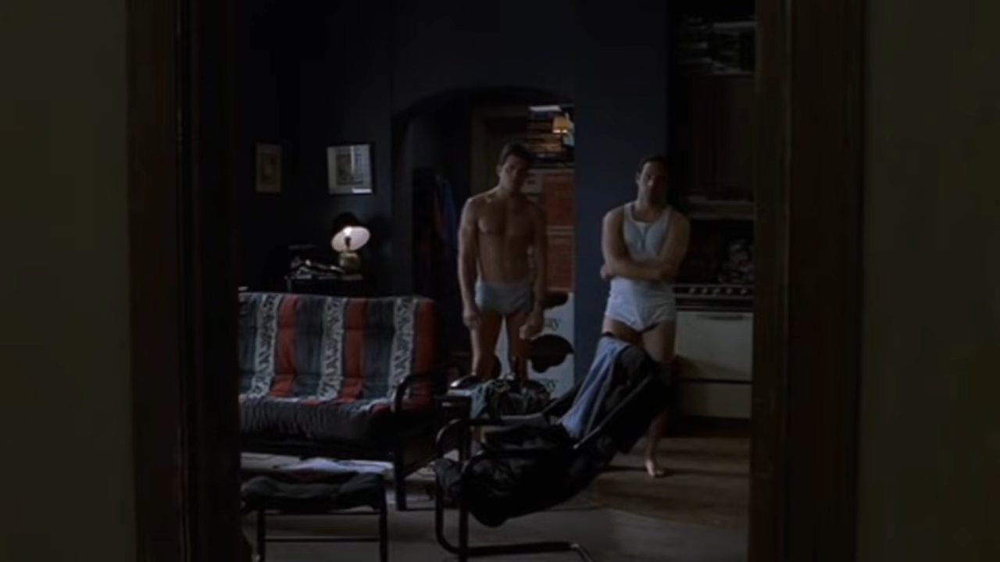(Furio leaves, leaving Matt and Sean a thousand dollars less than before.)